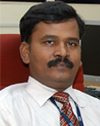

| Name | Dr. K. KATHIRAVAN B.E., M.TECH, Ph.D., |  |
|---|---|---|
| Designation | Dean & Head of the Department | |
| E-mail ID | hod.it@srmeaswari.ac.in |
The Department of Information Technology offers B.Tech. Degree programme in IT as well as M.E. degree programme in Software Engineering. The department has secured permanent affiliation from Anna University and is accredited by NBA.